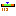

SDS Initializer
Ein Widget-Initializer setzt einige globale Eigenschaften für ein neues Widget. Der initializer kann in den Voreinstellungen gesetzt werden:
Menu 'CSS' -> 'Preferences' -> 'CSS Applications' -> 'Display' -> 'Default schema'.
All widgets
Alias Der Alias-Name des Widgets wird auf '$channel$' gesetzt.
Connection state Die Verbindungszustände werden durch die Hintegrundfarbe angezeigt:
initialize
connected
connection lost
Alarm status Der Alarmzustand einer Prozess-Variablen wird im Widget-Rahmen dargestellt:
No Alarm - no border
Alarm
Warning
 Action Button:
Action Button:
Action Data (Dynamic): Input- und Output-Channel werden auf das Alias $channel$ gesetzt.
Label text (Dynamic): Input-Channel wird auf das Alias $channel$ gesetzt und die Strings
für Verbindungszustände 'initialize' und 'connection lost' werden gesetzt.
(Weil der Action-Button keine Border hat, ist der Alarmzustand mit den Voreinstellungen nicht sichtbar!)
 Advanced Slider:
Slider Value (Dynamic): Input- und Output-Channel werden auf das Alias $channel$ gesetzt.
Max (Dynamic): Input-Channel wird auf die Alias-Characteristic $channel$[graphMax] gesetzt.
Min (Dynamic): Input-Channel wird auf das Alias-Characteristic $channel$[graphMin] gesetzt.
 Arc:
Arc:
(Weil die Hintergrundfarbe von Arc disabled ist, sind die Verbindungszustände nicht sichtbar.)
 Bargraph:
Bargraph:
Level HI (Dynamic): Input-Channel wird auf die Alias-Characteristic $channel$[warningMax] gesetzt.
Level HIHI (Dynamic): Input-Channel wird auf die Alias-Characteristic $channel$[alarmMax] gesetzt.
Level LO (Dynamic): Input-Channel wird auf die Alias-Characteristic $channel$[warningMin] gesetzt.
Level LOLO (Dynamic): Input-Channel wird auf die Alias-Characteristic $channel$[alarmMin] gesetzt.
Maximum (Dynamic): Input-Channel wird auf die Alias-Characteristic $channel$[graphMax] gesetzt.
Minimum (Dynamic): Input-Channel wird auf die Alias-Characteristic $channel$[graphMin] gesetzt.
Value (Dynamic): Input-Channel wird auf das Alias $channel$ gesetzt.
Color Fillbackground (Dynamic): Input-Channel wird auf das Alias $channel$ gesetzt und Verbindungszustände
auf die voreingestellten Statusfarben.
Transparent background (Dynamic): Input-Channel wird auf das Alias $channel$ gesetzt und der Verbindungszustand auf 'true' oder 'false'.
Fill color (Dynamic): Input-Channel wird auf die Alias-Characteristic $channel$[severity] gesetzt,
entsprechend den Regeln für voreingestellte Alarmfarben.
Foreground color (Dynamic): Input-Channel wird auf die Alias-Characteristic $channel$ gesetzt und
Verbindungszustände auf die voreingestellten Statusfarben.
 Ellipse:
Ellipse:
Value (Dynamic): Input-Channel wird auf das Alias $channel$ gesetzt und Werte
für die Verbindungszustände 'initialize' und 'connection lost' werden auf 0 gesetzt.
 Label:
Label:
Transparent (Static): Wird auf 'false' gesetzt.
Label text (Static): Der String wird auf 'Label' gesetzt.
Label text (Dynamic): Input-Channel wird auf das Alias $channel$ gesetzt und Strings
für Verbindungszustände 'initialize' und 'connection lost' werden gesetzt.
 Menu Button:
Menu Button:
Action Data (Dynamic): Input- und Output-Channel werden auf das Alias $channel$[enumDescriptions] und $channel$ gesetzt.
Label text (Dynamic): Input-Channel wird auf das Alias $channel$ gesetzt und Strings
für Verbindungszustände 'initialize' und 'connection lost' werden gesetzt.
 Meter:
Meter:
Boundary HI (Dynamic): Input-Channel wird auf die Alias-Characteristic $channel$[warningMax] gesetzt.
Boundary HIHI (Dynamic): Input-Channel wird auf die Alias-Characteristic $channel$[alarmMax] gesetzt.
Boundary LO (Dynamic): Input-Channel wird auf die Alias-Characteristic $channel$[warningMin] gesetzt.
Boundary LOLO (Dynamic): Input-Channel wird auf die Alias-Characteristic $channel$[alarmMin] gesetzt.
Maximum Value (Dynamic): Input-Channel wird auf die Alias-Characteristic $channel$[graphMax] gesetzt.
Minimum Value (Dynamic): Input-Channel wird auf die Alias-Characteristic $channel$[graphMin] gesetzt.
Value (Dynamic): Input-Channel wird auf das Alias $channel$ gesetzt.
 Polygon:
Polygon:
(Weil die Hintergrundfarbe eines Polygon disabled ist,sind die voreingestellten Verbindungszustände nicht sichtbar.)
 Polyline:
Polyline:
(Weil die Hintergrundfarbe einer Polyline disabled ist, sind die voreingestellten Verbindungszustände nicht sichtbar.)
 Rectangle:
Rectangle:
Value (Dynamic): Input-Channel wird auf das Alias $channel$ gesetzt und Werte
für die Verbindungszustände 'initialize' und 'connection lost' werden auf 0 gesetzt.
 Simple Slider:
Simple Slider:
Max (Dynamic): Input-Channel wird auf die Alias-Characteristic $channel$[graphMax] gesetzt.
Min (Dynamic): Input-Channel wird auf die Alias-Characteristic $channel$[graphMin] gesetzt.
Slider Value (Dynamic): Input- und Output-Channel werden auf das Alias $channel$ gesetzt.
 Sixteen Binary Bar:
Sixteen Binary Bar:
Value (Dynamic): Input-Channel wird auf das Alias $channel$ gesetzt.
Internal Frame Color (Dynamic): Input-Channel wird auf das Alias $channel$ gesetzt und Verbindungszustände
auf die voreingestellten Statusfarben.
 Strip Chart:
Strip Chart:
Value #1 (Dynamic): Input-Channel wird auf das Alias $channel$ gesetzt.
Maximum (Dynamic): Input-Channel wird auf die Alias-Characteristic $channel$[graphMax] gesetzt.
Minimum (Dynamic): Input-Channel wird auf die Alias-Characteristic $channel$[graphMin] gesetzt.
 Switch:
Switch:
Switch State (Dynamic): Input-Channel wird auf das Alias $channel$ gesetzt.
(Der Alarmzustand für den Switch wird nicht gesetzt.)
 Text Input:
Text Input:
Input Text (Static): Der String wird auf 'Enter Text' gesetzt.
Input Text (Dynamic): Input- und Output-Channel werden auf das Alias $channel$ gesetzt.
Transparent (Static): Wird auf 'false' gesetzt.
 Thumb Wheel:
Thumb Wheel:
Internal frame thickness (Static): Die Rahmendicke wird auf 1 gesetzt.
Value (Dynamic): Input- und Output-Channel werden auf das Alias $channel$ gesetzt.
Internal Frame Color (Dynamic): Input-Channel wird auf das Alias $channel$ gesetzt und Verbindungszustände
auf die voreingestellten Statusfarben.
Waveform:
Data #1 (Dynamic): Input-Channel wird auf das Alias $channel$ gesetzt.
Automatic scaling (Static): Wird auf 'false' gesetzt.
Maximum (Dynamic): Input-Channel wird auf die Alias-Characteristic $channel$[graphMax] gesetzt.
Minimum (Dynamic): Input-Channel wird auf die Alias-Characteristic $channel$[graphMin] gesetzt.
(Der Alarmzustand wird für die Waveform nicht gesetzt.)